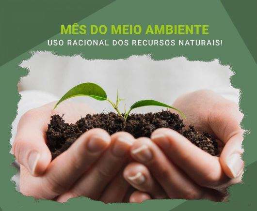
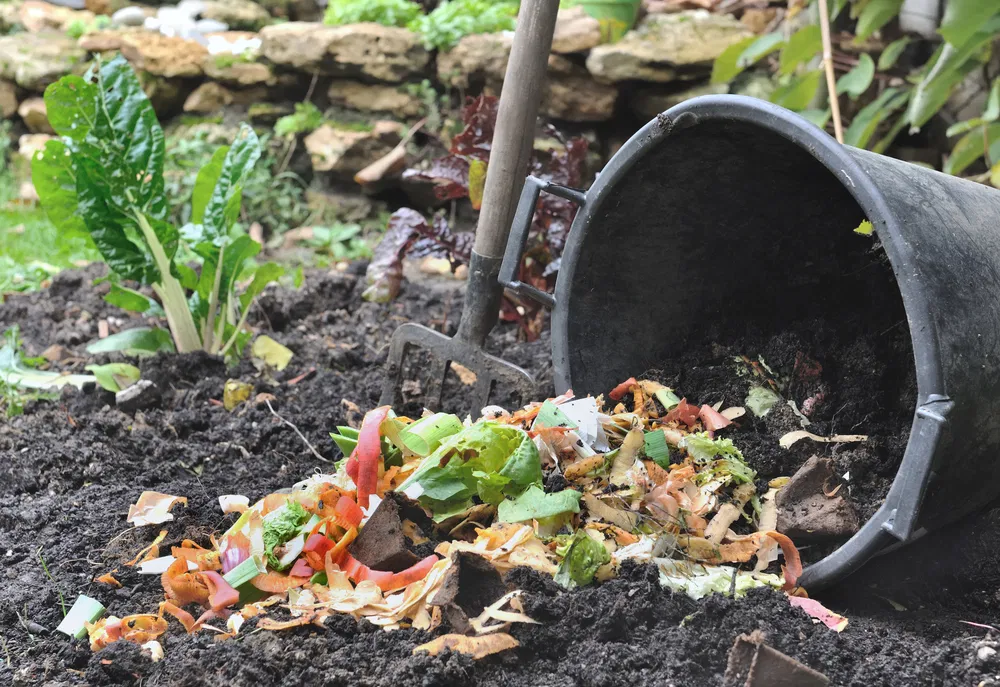
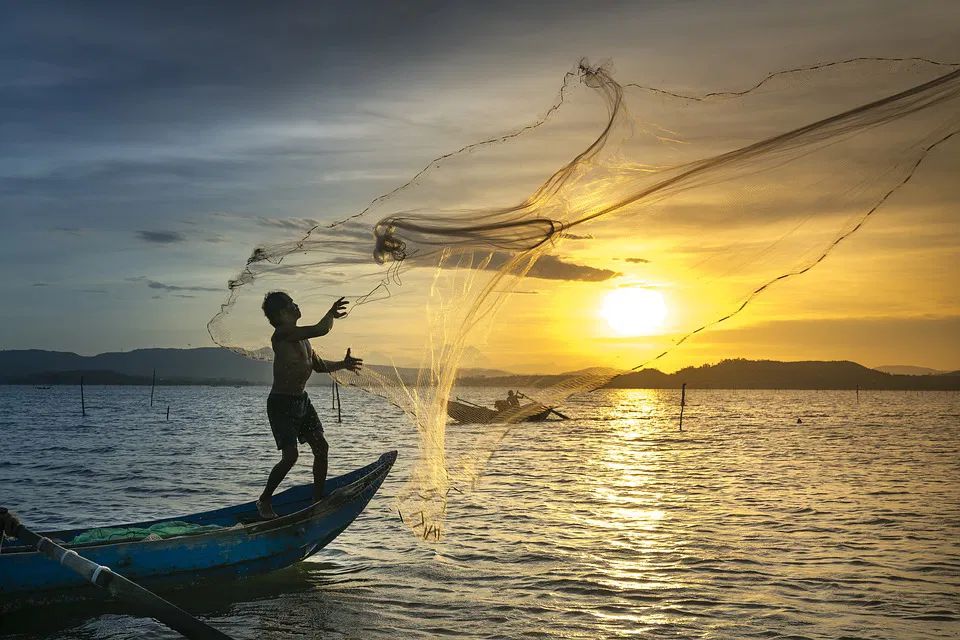

O Mês do Meio Ambiente é o principal período para ação ambiental em todo o mundo.
O objetivo é fazer com que todas as esferas da sociedade se voltem para os problemas ambientais e para a preservação dos recursos naturais.
Desde 1972 é comemorado oficialmente em 5 de junho e a celebração se estende durante todo o mês, incentivando governos, empresas, celebridades e indivíduos a realizarem iniciativas em prol do meio ambiente.

Preservação do Meio Ambiente
A preservação do meio ambiente refere-se ao conjunto de práticas que visam proteger a natureza e os recursos naturais,
garantindo o equilíbrio dos ecossistemas. Isso inclui a conservação da fauna, flora, água, solo e ar, além de minimizar o impacto das atividades humanas.
Como preservar o Meio Ambiente
Economize água: você pode economizar a água com cuidados simples,
como evitar torneiras abertas ou banhos longos. Além disso, é possível otimizar o uso da água com a utilização de um sistema de captação de água da chuva, por exemplo.
Separe o lixo: separar o lixo é uma forma muito eficiente de contribuir
para que os materiais reciclados sejam encaminhados para pontos de reciclagem e se tornem matéria-prima para outros produtos ao invés de lixo.
Faça compostagem: você pode fazer a compostagem dos lixos orgânicos que produzir,
assim além de diminuir a quantidade de lixo eliminada, você terá um excelente composto orgânico para colocar nas suas plantas.

Economize energia elétrica: utilize a energia elétrica apenas quando necessário,
apague as luzes quando não estiver nos ambientes e ligue os aparelhos eletrônicos apenas quando estiver usando. Aproveite a luz natural do sol e substitua suas lâmpadas por modelos mais econômicos.
Evite utilizar o carro: sempre que possível faça seus trajetos de bicicleta, a pé ou de ônibus.
A queima do combustível elimina dióxido de carbono no ar, que é um gás do efeito estufa que contribui para a intensificação do aquecimento global.
Reutilize e compre apenas o necessário: evite comprar produtos que já possui ou que podem ser adquiridos de segunda mão.
Além disso, antes de fazer uma compra, pense se realmente precisa daquele objeto, muitas vezes compramos sem necessidade
Respeite as leis ambientais: as leis ambientais determinam as áreas de proteção ambiental e os períodos permitidos
de pesca, por exemplo. Pescar em épocas de reprodução pode levar à extinção de espécies e consequentemente, desequilíbrios ambientais.

Importância da Preservação Ambiental
Preservar o meio ambiente é preservar a vida, não apenas dos seres humanos, mas de todas as espécies existentes. Afinal,
se os recursos naturais não forem utilizados de maneira sustentável, as próximas gerações são colocadas em risco. Além disso, a poluição do ar e da água, a contaminação do solo e o uso excessivo de fertilizantes já são responsáveis por problemas de saúde.
Doenças respiratórias, pulmonares, cardíacas e câncer são exemplos desses problemas.
Consequências da Poluição Ambiental
Doenças e problemas respiratórios e de pele, alergias, doenças nos olhos, hepatite, micose, diarreia, otite, surdez
Má formação de feto
Destruição da camada de ozônio
Morte de animais e plantas
O que queremos passar com nosso trabalho
Com a Semana Da Concientização do Meio Ambiente, percebemos a importância do cuidado com ele,
pensando nisso, resolvemos produzir uma maquete, site e um jogo que reflita uma critica para que percebam mais a fundo a importância dele.